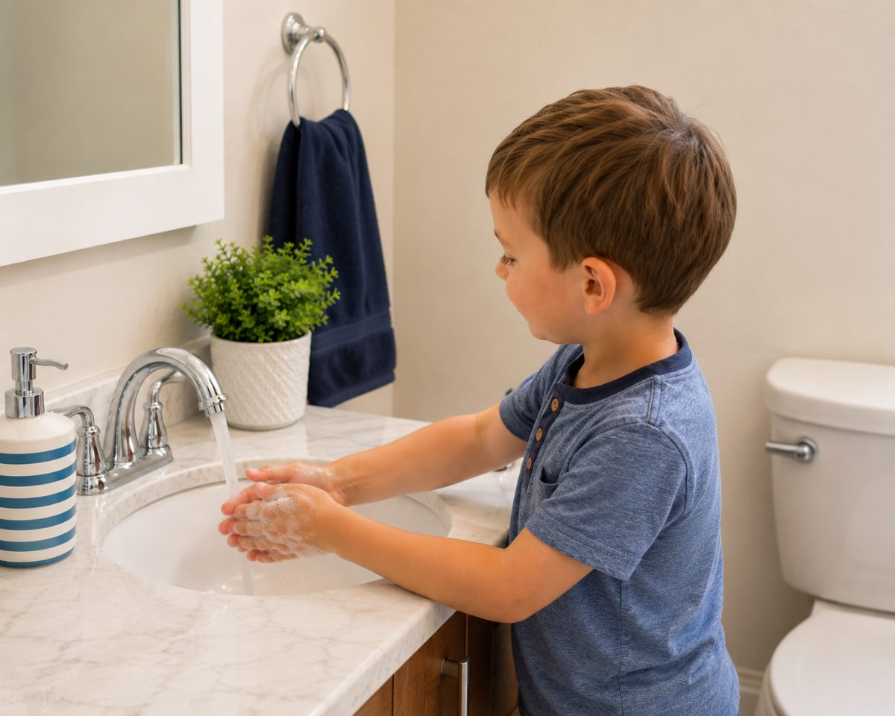

Helping kids build healthy habits with music, fun, and routine.
Make Potty Time Fun
A big yellow button for the toilet tank. Your child presses it, a song plays, and when the song ends, potty time is done. It comes loaded with our original songs — or record your own voice on it, up to 90 seconds.

The Problem Isn’t Potty Training. It’s the Negotiating.
Some kids are off the seat in four seconds. Others are in there for twenty minutes. Either way, you’re the timer.
The Sprinter
- Up and off before anything happens
- Hands technically “washed”
- An accident twenty minutes later
- “Go back and actually try”
The Settler
- Settles in like it’s a reading room
- A two-minute trip eats your morning
- Requests a snack
- “Are you done yet?” — for the fifth time
Both come down to the same thing: a three-year-old has no sense of how long “long enough” is. So you become the clock. You hover, you remind, you bargain — and a small daily routine turns into a small daily argument.
Press. Potty. Done.
Three steps a two-year-old can learn and run without you.

Press
The button sits on the toilet tank. It’s sized for small hands and takes only light pressure, so a two-year-old can do it alone.
Potty
A song plays. Long enough to actually finish. Short enough that it doesn’t become a concert.

Wash and Go
The song ends, potty time is over. Wash hands, back to playing.
Potty Time Can Sound Like Grandma
Every button arrives with our original songs already loaded. But you can record over them — up to 90 seconds of anything you like.
“Grandma’s so proud of you!”
Grandma, from four states away
“Three… two… one… you did it!”
A big sister counting down
“Dad’s still here, buddy.”
A parent who travels for work
“🎵 …their current favorite song 🎵”
Sung badly by you, which they will somehow love more
Kids listen differently to a voice they know. A song makes potty time predictable. A familiar voice makes it feel like someone’s in there with them — and for a nervous three-year-old alone in a big cold bathroom, that’s most of the battle.

You decide how long potty time is
Ninety seconds of recording isn’t just for messages — it means you set the length of the routine.
Some kids need thirty seconds. Some need two full minutes and a lot of encouragement to stay put. You’re not stuck with anyone else’s idea of how long your child should sit.
You can even record the whole thing start to finish:
“Okay, sit all the way back… you’re doing great… almost done… now let’s wash hands.”
One press. The entire routine. In your voice. Every single time — without you having to say it again.
And if you want our songs back afterward, you’ve got them. Every backer gets a free download of all our original songs, so you can put one back on any time. Record Grandma for the holidays, switch back in January.
For Kids Who Need More Time, and More Structure
Predictability helps every child. For some children, it’s the whole thing.
Time to Potty gives the same cue, the same length, and the same words every time. And because you record it yourself, “the same words” can be exactly the script that already works for your child, in the voice they already trust — adjustable up to 90 seconds, so the routine matches the child instead of the other way around.
No screens. No notifications. No flashing lights. Just one button and one familiar sound.
A Song Is a Container
tells a kid that time is up.
tells a kid that time is passing.
A song has a beginning and an end a child can hear coming, so “how much longer?” answers itself — and that’s the part that keeps them seated.
Parents have used this trick forever. The clean-up song. The tooth-brushing song. We built Time to Potty because it already worked in our house, and we got tired of being the one who had to sing it.
A Better Potty Routine for Kids and Parents
Your Voice, Not Ours
Record up to 90 seconds and re-record as often as you like. Grandma, a sibling, or the whole routine in your own words.
Original Songs Included
Written for this and nothing else — paced to the length a child needs, in tempos that hold attention without winding them up before bed.
Creates a Predictable Routine
The same cue, the same length, the same words — every single time they use the bathroom.
Encourages Independence
The large top takes only light pressure, so your child starts the routine themselves instead of waiting on you.
No App or Screen Needed
No phone, Bluetooth, Wi-Fi, account, or firmware update. Works out of the box, forever.
Easy for Parents
Set it on the toilet tank, flip the switch on the back, and it’s ready. That’s the whole setup.

What’s in the Button
- No app, Bluetooth, or Wi-Fi. Nothing to update.
- Large pressable top, sized and weighted for small hands
- Original songs preloaded, written for this and nothing else
- Record your own, up to 90 seconds. Re-record as often as you like.
- Free download of all our songs, so you can always put them back
- Built-in speaker — clear over a running tap, never startling in a small tiled room
- Wipe-clean sealed housing. No fabric, no seams to trap moisture.
- Battery powered, with a single on/off switch
“My kid is going to press that with dirty hands.”
Yes. They are.
The housing is a sealed shell — no fabric, no crevices, nothing to trap moisture. It wipes down with a disinfecting wipe in about three seconds, and it’s built to take that every day without the artwork wearing off.
Approximate overall diameter: mm · Top button diameter: approximately mm · Approximate total height: mm. Sits on a standard toilet tank without crowding it.
The Potty Time Routine
A simple sequence children can learn and repeat every time.
Done, and What’s Left
What’s left is the first production run — and that’s exactly what your pledge funds.
- ✓ Songs written and recorded
- ✓ Artwork and design finalized
- ✓ Working prototype built and tested
- ✓ Manufacturing partner selected and quoted
- ✓ Safety and compliance plan in place
- → First production run — funded by this campaign
Why February 2027, and not sooner?
The campaign closes this autumn, funds clear about two weeks later, production takes four to six weeks, ocean freight another four to six, and Chinese New Year shuts factories for several weeks in the first quarter.
February is the honest answer. We’d rather promise it and hit it than promise December and apologize.
Back It on Kickstarter
Time to Potty Music Button
$16 on Kickstarter — 20% off the $19.99 retail price, and you’ll have it months before anyone else.
Back Us on KickstarterOur campaign is launching soon. Join the list below and we’ll email you the moment it goes live.
- Original songs preloaded
- Record your own voice, up to 90 seconds
- Simple one-button operation
- No app required
- Free download of all our original songs
Pledge tiers
- $5 Founding Supporter — digital thank-you card, song download, your name on our site
- $8 Lip Balm — plus the song download
- $10 Magnet — plus the song download
- $16 One Button — button, sticker sheet, song download
- $29 Two-Bathroom Pack — two buttons and a magnet
- $65 The Complete Set — two buttons and a hand towel
- $120 Classroom Pack — eight buttons for daycares and preschools
Frequently Asked Questions
What is Time to Potty?
A big yellow button that sits on the toilet tank. Your child presses it, a song plays, and when the song ends, potty time is over. It gives kids a routine they can follow without you standing in the hallway asking if they’re done.
Can I record my own voice?
Yes — that’s the part we’re proudest of. Every button comes loaded with our original songs, and you can record over them with up to 90 seconds of anything you like: a grandparent, a sibling, or the entire potty routine in your own words. Re-record as often as you want.
How long does the audio play?
Our preloaded songs are paced to the length a child actually needs. If you record your own, you set the length — anything up to 90 seconds.
If I record over the songs, are they gone?
No. Every backer gets a free download of all our original songs, so you can put one back on the button any time. Record Grandma for the holidays, switch back in January.
What ages is it designed for?
Toddlers and young children who are learning bathroom routines — roughly ages 2 to 7.
Does it require an app?
No. No app, no Bluetooth, no Wi-Fi, no account, and no firmware updates. It works out of the box and keeps working.
Where does it go?
On the toilet tank, within your child’s reach. It’s sized to sit on a standard tank without crowding it.
How do I clean it?
Does it guarantee potty-training success?
No. It’s a routine-support product, not a training program. Every child develops at their own pace, and anyone promising otherwise is selling you something else.
Are batteries included?
When does it ship?
Backer rewards are estimated to ship February 2027. The campaign closes this autumn, funds clear about two weeks later, production takes four to six weeks, ocean freight another four to six, and factories close for several weeks around Chinese New Year. February is the honest answer.
One Button. One Song. One Routine.
We made this because potty training in our house was a daily standoff, and one silly song ended it. If that sounds familiar, you already know what this button is for.
Back Us on Kickstarter